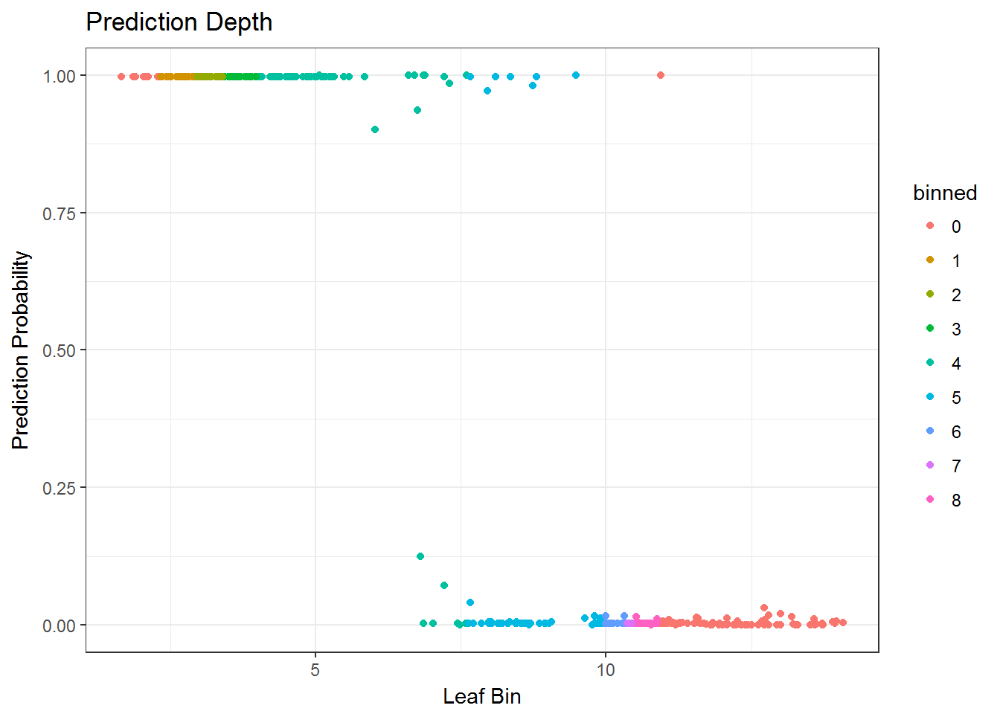
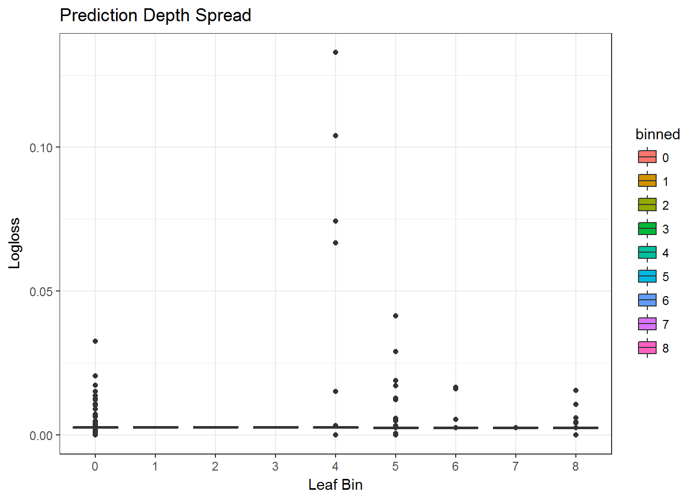
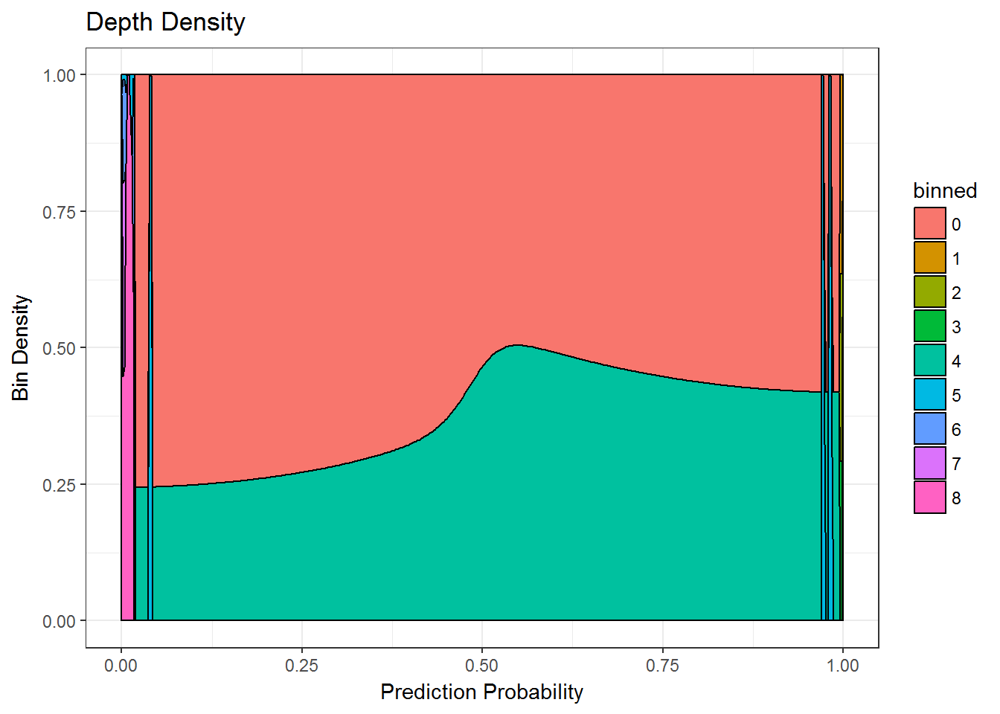
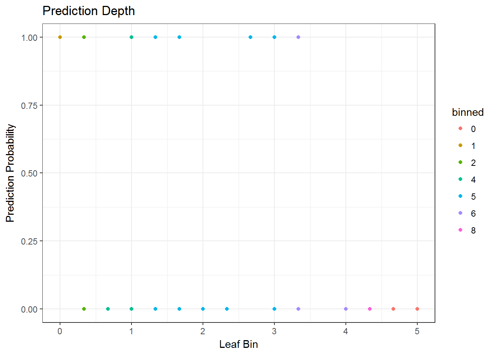
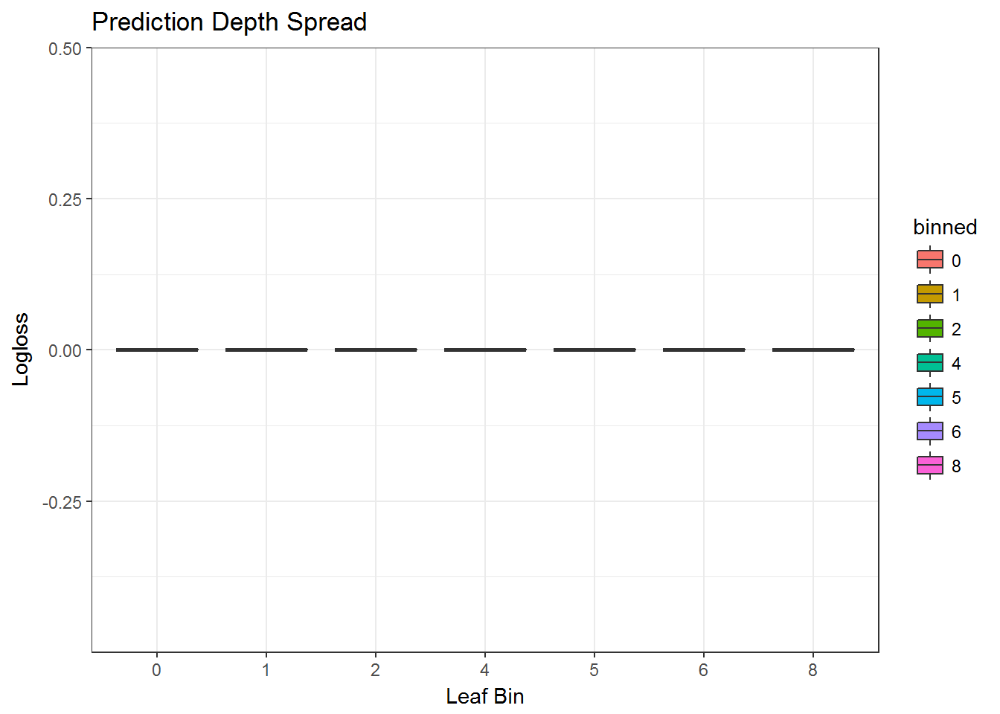
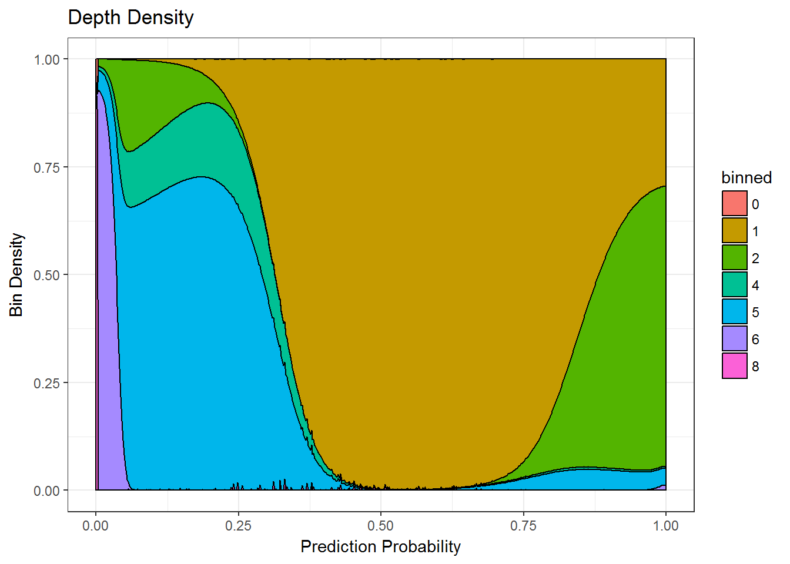

Leaf (in)Stability example
# We are going to look at how iterating too much might generate observation instability.
# Obviously, we are in a controlled environment, without issues (real rules).
# Do not do this in a real scenario.
# First, we load our libraries
library(lightgbm)## Loading required package: R6library(ggplot2)
# Second, we load our data
data(agaricus.train, package = "lightgbm")
train <- agaricus.train
dtrain <- lgb.Dataset(train$data, label = train$label)
data(agaricus.test, package = "lightgbm")
test <- agaricus.test
dtest <- lgb.Dataset.create.valid(dtrain, test$data, label = test$label)
# Third, we setup parameters and we train a model
params <- list(objective = "regression", metric = "l2")
valids <- list(test = dtest)
model <- lgb.train(params,
dtrain,
50,
valids,
min_data = 1,
learning_rate = 0.1,
bagging_fraction = 0.1,
bagging_freq = 1,
bagging_seed = 1,
nthread = 1)## Loading required package: Matrix## [1]: test's l2:0.202293
## [2]: test's l2:0.164342
## [3]: test's l2:0.133283
## [4]: test's l2:0.1084
## [5]: test's l2:0.0877367
## [6]: test's l2:0.0710476
## [7]: test's l2:0.0575632
## [8]: test's l2:0.0466222
## [9]: test's l2:0.0379134
## [10]: test's l2:0.0307555
## [11]: test's l2:0.0248963
## [12]: test's l2:0.0201392
## [13]: test's l2:0.0163162
## [14]: test's l2:0.0132696
## [15]: test's l2:0.0107514
## [16]: test's l2:0.00882604
## [17]: test's l2:0.00724468
## [18]: test's l2:0.00589563
## [19]: test's l2:0.00478529
## [20]: test's l2:0.00389577
## [21]: test's l2:0.00317115
## [22]: test's l2:0.00264432
## [23]: test's l2:0.0021541
## [24]: test's l2:0.00179906
## [25]: test's l2:0.00150985
## [26]: test's l2:0.00129508
## [27]: test's l2:0.00108426
## [28]: test's l2:0.000956892
## [29]: test's l2:0.000856905
## [30]: test's l2:0.000729517
## [31]: test's l2:0.000613605
## [32]: test's l2:0.000523628
## [33]: test's l2:0.000449206
## [34]: test's l2:0.000378496
## [35]: test's l2:0.000312651
## [36]: test's l2:0.000259974
## [37]: test's l2:0.000222764
## [38]: test's l2:0.000207567
## [39]: test's l2:0.000201502
## [40]: test's l2:0.000170301
## [41]: test's l2:0.000155593
## [42]: test's l2:0.000134624
## [43]: test's l2:0.000120277
## [44]: test's l2:0.000111736
## [45]: test's l2:9.5131e-05
## [46]: test's l2:9.03253e-05
## [47]: test's l2:8.87863e-05
## [48]: test's l2:8.38359e-05
## [49]: test's l2:8.21905e-05
## [50]: test's l2:7.20829e-05# We create a data.frame with the following structure:
# X = average leaf of the observation throughout all trees
# Y = prediction probability (clamped to [1e-15, 1-1e-15])
# Z = logloss
# binned = binned quantile of average leaf
new_data <- data.frame(X = rowMeans(predict(model,
agaricus.test$data,
predleaf = TRUE)),
Y = pmin(pmax(predict(model,
agaricus.test$data), 1e-15), 1 - 1e-15))
new_data$Z <- -(agaricus.test$label * log(new_data$Y) + (1 - agaricus.test$label) * log(1 - new_data$Y))
new_data$binned <- .bincode(x = new_data$X,
breaks = quantile(x = new_data$X,
probs = (1:9)/10),
right = TRUE,
include.lowest = TRUE)
new_data$binned[is.na(new_data$binned)] <- 0
new_data$binned <- as.factor(new_data$binned)
# We can check the binned content
table(new_data$binned)##
## 0 1 2 3 4 5 6 7 8
## 292 188 164 147 159 166 180 138 177# We can plot the binned content
# On the second plot, we clearly notice the lower the bin (the lower the leaf value), the higher the loss
# On the third plot, it is smooth!
ggplot(data = new_data, mapping = aes(x = X, y = Y, color = binned)) + geom_point() + theme_bw() + labs(title = "Prediction Depth", x = "Leaf Bin", y = "Prediction Probability")
ggplot(data = new_data, mapping = aes(x = binned, y = Z, fill = binned, group = binned)) + geom_boxplot() + theme_bw() + labs(title = "Prediction Depth Spread", x = "Leaf Bin", y = "Logloss")
ggplot(data = new_data, mapping = aes(x = Y, y = ..count.., fill = binned)) + geom_density(position = "fill") + theme_bw() + labs(title = "Depth Density", x = "Prediction Probability", y = "Bin Density")
# Now, let's show with other parameters
model2 <- lgb.train(params,
dtrain,
100,
valids,
min_data = 1,
learning_rate = 1,
nthread = 1)## [1]: test's l2:6.44165e-17
## [2]: test's l2:1.97215e-31
## [3]: test's l2:0
## [4]: test's l2:0
## [5]: test's l2:0
## [6]: test's l2:0
## [7]: test's l2:0
## [8]: test's l2:0
## [9]: test's l2:0
## [10]: test's l2:0
## [11]: test's l2:0
## [12]: test's l2:0
## [13]: test's l2:0
## [14]: test's l2:0
## [15]: test's l2:0
## [16]: test's l2:0
## [17]: test's l2:0
## [18]: test's l2:0
## [19]: test's l2:0
## [20]: test's l2:0
## [21]: test's l2:0
## [22]: test's l2:0
## [23]: test's l2:0
## [24]: test's l2:0
## [25]: test's l2:0
## [26]: test's l2:0
## [27]: test's l2:0
## [28]: test's l2:0
## [29]: test's l2:0
## [30]: test's l2:0
## [31]: test's l2:0
## [32]: test's l2:0
## [33]: test's l2:0
## [34]: test's l2:0
## [35]: test's l2:0
## [36]: test's l2:0
## [37]: test's l2:0
## [38]: test's l2:0
## [39]: test's l2:0
## [40]: test's l2:0
## [41]: test's l2:0
## [42]: test's l2:0
## [43]: test's l2:0
## [44]: test's l2:0
## [45]: test's l2:0
## [46]: test's l2:0
## [47]: test's l2:0
## [48]: test's l2:0
## [49]: test's l2:0
## [50]: test's l2:0
## [51]: test's l2:0
## [52]: test's l2:0
## [53]: test's l2:0
## [54]: test's l2:0
## [55]: test's l2:0
## [56]: test's l2:0
## [57]: test's l2:0
## [58]: test's l2:0
## [59]: test's l2:0
## [60]: test's l2:0
## [61]: test's l2:0
## [62]: test's l2:0
## [63]: test's l2:0
## [64]: test's l2:0
## [65]: test's l2:0
## [66]: test's l2:0
## [67]: test's l2:0
## [68]: test's l2:0
## [69]: test's l2:0
## [70]: test's l2:0
## [71]: test's l2:0
## [72]: test's l2:0
## [73]: test's l2:0
## [74]: test's l2:0
## [75]: test's l2:0
## [76]: test's l2:0
## [77]: test's l2:0
## [78]: test's l2:0
## [79]: test's l2:0
## [80]: test's l2:0
## [81]: test's l2:0
## [82]: test's l2:0
## [83]: test's l2:0
## [84]: test's l2:0
## [85]: test's l2:0
## [86]: test's l2:0
## [87]: test's l2:0
## [88]: test's l2:0
## [89]: test's l2:0
## [90]: test's l2:0
## [91]: test's l2:0
## [92]: test's l2:0
## [93]: test's l2:0
## [94]: test's l2:0
## [95]: test's l2:0
## [96]: test's l2:0
## [97]: test's l2:0
## [98]: test's l2:0
## [99]: test's l2:0
## [100]: test's l2:0# We create the data structure, but for model2
new_data2 <- data.frame(X = rowMeans(predict(model2,
agaricus.test$data,
predleaf = TRUE)),
Y = pmin(pmax(predict(model2,
agaricus.test$data), 1e-15), 1 - 1e-15))
new_data2$Z <- -(agaricus.test$label * log(new_data2$Y) + (1 - agaricus.test$label) * log(1 - new_data2$Y))
new_data2$binned <- .bincode(x = new_data2$X,
breaks = quantile(x = new_data2$X,
probs = (1:9)/10),
right = TRUE,
include.lowest = TRUE)
new_data2$binned[is.na(new_data2$binned)] <- 0
new_data2$binned <- as.factor(new_data2$binned)
# We can check the binned content
table(new_data2$binned)##
## 0 1 2 4 5 6 8
## 25 440 337 31 159 339 280# We can plot the binned content
# On the second plot, we clearly notice the lower the bin (the lower the leaf value), the higher the loss
# On the third plot, it is clearly not smooth! We are severely overfitting the data, but the rules are real thus it is not an issue
# However, if the rules were not true, the loss would explode.
ggplot(data = new_data2, mapping = aes(x = X, y = Y, color = binned)) + geom_point() + theme_bw() + labs(title = "Prediction Depth", x = "Leaf Bin", y = "Prediction Probability")
ggplot(data = new_data2, mapping = aes(x = binned, y = Z, fill = binned, group = binned)) + geom_boxplot() + theme_bw() + labs(title = "Prediction Depth Spread", x = "Leaf Bin", y = "Logloss")
ggplot(data = new_data2, mapping = aes(x = Y, y = ..count.., fill = binned)) + geom_density(position = "fill") + theme_bw() + labs(title = "Depth Density", x = "Prediction Probability", y = "Bin Density")
# Now, try with very severe overfitting
model3 <- lgb.train(params,
dtrain,
1000,
valids,
min_data = 1,
learning_rate = 1,
nthread = 1)## [1]: test's l2:6.44165e-17
## [2]: test's l2:1.97215e-31
## [3]: test's l2:0
## [4]: test's l2:0
## [5]: test's l2:0
## [6]: test's l2:0
## [7]: test's l2:0
## [8]: test's l2:0
## [9]: test's l2:0
## [10]: test's l2:0
## [11]: test's l2:0
## [12]: test's l2:0
## [13]: test's l2:0
## [14]: test's l2:0
## [15]: test's l2:0
## [16]: test's l2:0
## [17]: test's l2:0
## [18]: test's l2:0
## [19]: test's l2:0
## [20]: test's l2:0
## [21]: test's l2:0
## [22]: test's l2:0
## [23]: test's l2:0
## [24]: test's l2:0
## [25]: test's l2:0
## [26]: test's l2:0
## [27]: test's l2:0
## [28]: test's l2:0
## [29]: test's l2:0
## [30]: test's l2:0
## [31]: test's l2:0
## [32]: test's l2:0
## [33]: test's l2:0
## [34]: test's l2:0
## [35]: test's l2:0
## [36]: test's l2:0
## [37]: test's l2:0
## [38]: test's l2:0
## [39]: test's l2:0
## [40]: test's l2:0
## [41]: test's l2:0
## [42]: test's l2:0
## [43]: test's l2:0
## [44]: test's l2:0
## [45]: test's l2:0
## [46]: test's l2:0
## [47]: test's l2:0
## [48]: test's l2:0
## [49]: test's l2:0
## [50]: test's l2:0
## [51]: test's l2:0
## [52]: test's l2:0
## [53]: test's l2:0
## [54]: test's l2:0
## [55]: test's l2:0
## [56]: test's l2:0
## [57]: test's l2:0
## [58]: test's l2:0
## [59]: test's l2:0
## [60]: test's l2:0
## [61]: test's l2:0
## [62]: test's l2:0
## [63]: test's l2:0
## [64]: test's l2:0
## [65]: test's l2:0
## [66]: test's l2:0
## [67]: test's l2:0
## [68]: test's l2:0
## [69]: test's l2:0
## [70]: test's l2:0
## [71]: test's l2:0
## [72]: test's l2:0
## [73]: test's l2:0
## [74]: test's l2:0
## [75]: test's l2:0
## [76]: test's l2:0
## [77]: test's l2:0
## [78]: test's l2:0
## [79]: test's l2:0
## [80]: test's l2:0
## [81]: test's l2:0
## [82]: test's l2:0
## [83]: test's l2:0
## [84]: test's l2:0
## [85]: test's l2:0
## [86]: test's l2:0
## [87]: test's l2:0
## [88]: test's l2:0
## [89]: test's l2:0
## [90]: test's l2:0
## [91]: test's l2:0
## [92]: test's l2:0
## [93]: test's l2:0
## [94]: test's l2:0
## [95]: test's l2:0
## [96]: test's l2:0
## [97]: test's l2:0
## [98]: test's l2:0
## [99]: test's l2:0
## [100]: test's l2:0
## [101]: test's l2:0
## [102]: test's l2:0
## [103]: test's l2:0
## [104]: test's l2:0
## [105]: test's l2:0
## [106]: test's l2:0
## [107]: test's l2:0
## [108]: test's l2:0
## [109]: test's l2:0
## [110]: test's l2:0
## [111]: test's l2:0
## [112]: test's l2:0
## [113]: test's l2:0
## [114]: test's l2:0
## [115]: test's l2:0
## [116]: test's l2:0
## [117]: test's l2:0
## [118]: test's l2:0
## [119]: test's l2:0
## [120]: test's l2:0
## [121]: test's l2:0
## [122]: test's l2:0
## [123]: test's l2:0
## [124]: test's l2:0
## [125]: test's l2:0
## [126]: test's l2:0
## [127]: test's l2:0
## [128]: test's l2:0
## [129]: test's l2:0
## [130]: test's l2:0
## [131]: test's l2:0
## [132]: test's l2:0
## [133]: test's l2:0
## [134]: test's l2:0
## [135]: test's l2:0
## [136]: test's l2:0
## [137]: test's l2:0
## [138]: test's l2:0
## [139]: test's l2:0
## [140]: test's l2:0
## [141]: test's l2:0
## [142]: test's l2:0
## [143]: test's l2:0
## [144]: test's l2:0
## [145]: test's l2:0
## [146]: test's l2:0
## [147]: test's l2:0
## [148]: test's l2:0
## [149]: test's l2:0
## [150]: test's l2:0
## [151]: test's l2:0
## [152]: test's l2:0
## [153]: test's l2:0
## [154]: test's l2:0
## [155]: test's l2:0
## [156]: test's l2:0
## [157]: test's l2:0
## [158]: test's l2:0
## [159]: test's l2:0
## [160]: test's l2:0
## [161]: test's l2:0
## [162]: test's l2:0
## [163]: test's l2:0
## [164]: test's l2:0
## [165]: test's l2:0
## [166]: test's l2:0
## [167]: test's l2:0
## [168]: test's l2:0
## [169]: test's l2:0
## [170]: test's l2:0
## [171]: test's l2:0
## [172]: test's l2:0
## [173]: test's l2:0
## [174]: test's l2:0
## [175]: test's l2:0
## [176]: test's l2:0
## [177]: test's l2:0
## [178]: test's l2:0
## [179]: test's l2:0
## [180]: test's l2:0
## [181]: test's l2:0
## [182]: test's l2:0
## [183]: test's l2:0
## [184]: test's l2:0
## [185]: test's l2:0
## [186]: test's l2:0
## [187]: test's l2:0
## [188]: test's l2:0
## [189]: test's l2:0
## [190]: test's l2:0
## [191]: test's l2:0
## [192]: test's l2:0
## [193]: test's l2:0
## [194]: test's l2:0
## [195]: test's l2:0
## [196]: test's l2:0
## [197]: test's l2:0
## [198]: test's l2:0
## [199]: test's l2:0
## [200]: test's l2:0
## [201]: test's l2:0
## [202]: test's l2:0
## [203]: test's l2:0
## [204]: test's l2:0
## [205]: test's l2:0
## [206]: test's l2:0
## [207]: test's l2:0
## [208]: test's l2:0
## [209]: test's l2:0
## [210]: test's l2:0
## [211]: test's l2:0
## [212]: test's l2:0
## [213]: test's l2:0
## [214]: test's l2:0
## [215]: test's l2:0
## [216]: test's l2:0
## [217]: test's l2:0
## [218]: test's l2:0
## [219]: test's l2:0
## [220]: test's l2:0
## [221]: test's l2:0
## [222]: test's l2:0
## [223]: test's l2:0
## [224]: test's l2:0
## [225]: test's l2:0
## [226]: test's l2:0
## [227]: test's l2:0
## [228]: test's l2:0
## [229]: test's l2:0
## [230]: test's l2:0
## [231]: test's l2:0
## [232]: test's l2:0
## [233]: test's l2:0
## [234]: test's l2:0
## [235]: test's l2:0
## [236]: test's l2:0
## [237]: test's l2:0
## [238]: test's l2:0
## [239]: test's l2:0
## [240]: test's l2:0
## [241]: test's l2:0
## [242]: test's l2:0
## [243]: test's l2:0
## [244]: test's l2:0
## [245]: test's l2:0
## [246]: test's l2:0
## [247]: test's l2:0
## [248]: test's l2:0
## [249]: test's l2:0
## [250]: test's l2:0
## [251]: test's l2:0
## [252]: test's l2:0
## [253]: test's l2:0
## [254]: test's l2:0
## [255]: test's l2:0
## [256]: test's l2:0
## [257]: test's l2:0
## [258]: test's l2:0
## [259]: test's l2:0
## [260]: test's l2:0
## [261]: test's l2:0
## [262]: test's l2:0
## [263]: test's l2:0
## [264]: test's l2:0
## [265]: test's l2:0
## [266]: test's l2:0
## [267]: test's l2:0
## [268]: test's l2:0
## [269]: test's l2:0
## [270]: test's l2:0
## [271]: test's l2:0
## [272]: test's l2:0
## [273]: test's l2:0
## [274]: test's l2:0
## [275]: test's l2:0
## [276]: test's l2:0
## [277]: test's l2:0
## [278]: test's l2:0
## [279]: test's l2:0
## [280]: test's l2:0
## [281]: test's l2:0
## [282]: test's l2:0
## [283]: test's l2:0
## [284]: test's l2:0
## [285]: test's l2:0
## [286]: test's l2:0
## [287]: test's l2:0
## [288]: test's l2:0
## [289]: test's l2:0
## [290]: test's l2:0
## [291]: test's l2:0
## [292]: test's l2:0
## [293]: test's l2:0
## [294]: test's l2:0
## [295]: test's l2:0
## [296]: test's l2:0
## [297]: test's l2:0
## [298]: test's l2:0
## [299]: test's l2:0
## [300]: test's l2:0
## [301]: test's l2:0
## [302]: test's l2:0
## [303]: test's l2:0
## [304]: test's l2:0
## [305]: test's l2:0
## [306]: test's l2:0
## [307]: test's l2:0
## [308]: test's l2:0
## [309]: test's l2:0
## [310]: test's l2:0
## [311]: test's l2:0
## [312]: test's l2:0
## [313]: test's l2:0
## [314]: test's l2:0
## [315]: test's l2:0
## [316]: test's l2:0
## [317]: test's l2:0
## [318]: test's l2:0
## [319]: test's l2:0
## [320]: test's l2:0
## [321]: test's l2:0
## [322]: test's l2:0
## [323]: test's l2:0
## [324]: test's l2:0
## [325]: test's l2:0
## [326]: test's l2:0
## [327]: test's l2:0
## [328]: test's l2:0
## [329]: test's l2:0
## [330]: test's l2:0
## [331]: test's l2:0
## [332]: test's l2:0
## [333]: test's l2:0
## [334]: test's l2:0
## [335]: test's l2:0
## [336]: test's l2:0
## [337]: test's l2:0
## [338]: test's l2:0
## [339]: test's l2:0
## [340]: test's l2:0
## [341]: test's l2:0
## [342]: test's l2:0
## [343]: test's l2:0
## [344]: test's l2:0
## [345]: test's l2:0
## [346]: test's l2:0
## [347]: test's l2:0
## [348]: test's l2:0
## [349]: test's l2:0
## [350]: test's l2:0
## [351]: test's l2:0
## [352]: test's l2:0
## [353]: test's l2:0
## [354]: test's l2:0
## [355]: test's l2:0
## [356]: test's l2:0
## [357]: test's l2:0
## [358]: test's l2:0
## [359]: test's l2:0
## [360]: test's l2:0
## [361]: test's l2:0
## [362]: test's l2:0
## [363]: test's l2:0
## [364]: test's l2:0
## [365]: test's l2:0
## [366]: test's l2:0
## [367]: test's l2:0
## [368]: test's l2:0
## [369]: test's l2:0
## [370]: test's l2:0
## [371]: test's l2:0
## [372]: test's l2:0
## [373]: test's l2:0
## [374]: test's l2:0
## [375]: test's l2:0
## [376]: test's l2:0
## [377]: test's l2:0
## [378]: test's l2:0
## [379]: test's l2:0
## [380]: test's l2:0
## [381]: test's l2:0
## [382]: test's l2:0
## [383]: test's l2:0
## [384]: test's l2:0
## [385]: test's l2:0
## [386]: test's l2:0
## [387]: test's l2:0
## [388]: test's l2:0
## [389]: test's l2:0
## [390]: test's l2:0
## [391]: test's l2:0
## [392]: test's l2:0
## [393]: test's l2:0
## [394]: test's l2:0
## [395]: test's l2:0
## [396]: test's l2:0
## [397]: test's l2:0
## [398]: test's l2:0
## [399]: test's l2:0
## [400]: test's l2:0
## [401]: test's l2:0
## [402]: test's l2:0
## [403]: test's l2:0
## [404]: test's l2:0
## [405]: test's l2:0
## [406]: test's l2:0
## [407]: test's l2:0
## [408]: test's l2:0
## [409]: test's l2:0
## [410]: test's l2:0
## [411]: test's l2:0
## [412]: test's l2:0
## [413]: test's l2:0
## [414]: test's l2:0
## [415]: test's l2:0
## [416]: test's l2:0
## [417]: test's l2:0
## [418]: test's l2:0
## [419]: test's l2:0
## [420]: test's l2:0
## [421]: test's l2:0
## [422]: test's l2:0
## [423]: test's l2:0
## [424]: test's l2:0
## [425]: test's l2:0
## [426]: test's l2:0
## [427]: test's l2:0
## [428]: test's l2:0
## [429]: test's l2:0
## [430]: test's l2:0
## [431]: test's l2:0
## [432]: test's l2:0
## [433]: test's l2:0
## [434]: test's l2:0
## [435]: test's l2:0
## [436]: test's l2:0
## [437]: test's l2:0
## [438]: test's l2:0
## [439]: test's l2:0
## [440]: test's l2:0
## [441]: test's l2:0
## [442]: test's l2:0
## [443]: test's l2:0
## [444]: test's l2:0
## [445]: test's l2:0
## [446]: test's l2:0
## [447]: test's l2:0
## [448]: test's l2:0
## [449]: test's l2:0
## [450]: test's l2:0
## [451]: test's l2:0
## [452]: test's l2:0
## [453]: test's l2:0
## [454]: test's l2:0
## [455]: test's l2:0
## [456]: test's l2:0
## [457]: test's l2:0
## [458]: test's l2:0
## [459]: test's l2:0
## [460]: test's l2:0
## [461]: test's l2:0
## [462]: test's l2:0
## [463]: test's l2:0
## [464]: test's l2:0
## [465]: test's l2:0
## [466]: test's l2:0
## [467]: test's l2:0
## [468]: test's l2:0
## [469]: test's l2:0
## [470]: test's l2:0
## [471]: test's l2:0
## [472]: test's l2:0
## [473]: test's l2:0
## [474]: test's l2:0
## [475]: test's l2:0
## [476]: test's l2:0
## [477]: test's l2:0
## [478]: test's l2:0
## [479]: test's l2:0
## [480]: test's l2:0
## [481]: test's l2:0
## [482]: test's l2:0
## [483]: test's l2:0
## [484]: test's l2:0
## [485]: test's l2:0
## [486]: test's l2:0
## [487]: test's l2:0
## [488]: test's l2:0
## [489]: test's l2:0
## [490]: test's l2:0
## [491]: test's l2:0
## [492]: test's l2:0
## [493]: test's l2:0
## [494]: test's l2:0
## [495]: test's l2:0
## [496]: test's l2:0
## [497]: test's l2:0
## [498]: test's l2:0
## [499]: test's l2:0
## [500]: test's l2:0
## [501]: test's l2:0
## [502]: test's l2:0
## [503]: test's l2:0
## [504]: test's l2:0
## [505]: test's l2:0
## [506]: test's l2:0
## [507]: test's l2:0
## [508]: test's l2:0
## [509]: test's l2:0
## [510]: test's l2:0
## [511]: test's l2:0
## [512]: test's l2:0
## [513]: test's l2:0
## [514]: test's l2:0
## [515]: test's l2:0
## [516]: test's l2:0
## [517]: test's l2:0
## [518]: test's l2:0
## [519]: test's l2:0
## [520]: test's l2:0
## [521]: test's l2:0
## [522]: test's l2:0
## [523]: test's l2:0
## [524]: test's l2:0
## [525]: test's l2:0
## [526]: test's l2:0
## [527]: test's l2:0
## [528]: test's l2:0
## [529]: test's l2:0
## [530]: test's l2:0
## [531]: test's l2:0
## [532]: test's l2:0
## [533]: test's l2:0
## [534]: test's l2:0
## [535]: test's l2:0
## [536]: test's l2:0
## [537]: test's l2:0
## [538]: test's l2:0
## [539]: test's l2:0
## [540]: test's l2:0
## [541]: test's l2:0
## [542]: test's l2:0
## [543]: test's l2:0
## [544]: test's l2:0
## [545]: test's l2:0
## [546]: test's l2:0
## [547]: test's l2:0
## [548]: test's l2:0
## [549]: test's l2:0
## [550]: test's l2:0
## [551]: test's l2:0
## [552]: test's l2:0
## [553]: test's l2:0
## [554]: test's l2:0
## [555]: test's l2:0
## [556]: test's l2:0
## [557]: test's l2:0
## [558]: test's l2:0
## [559]: test's l2:0
## [560]: test's l2:0
## [561]: test's l2:0
## [562]: test's l2:0
## [563]: test's l2:0
## [564]: test's l2:0
## [565]: test's l2:0
## [566]: test's l2:0
## [567]: test's l2:0
## [568]: test's l2:0
## [569]: test's l2:0
## [570]: test's l2:0
## [571]: test's l2:0
## [572]: test's l2:0
## [573]: test's l2:0
## [574]: test's l2:0
## [575]: test's l2:0
## [576]: test's l2:0
## [577]: test's l2:0
## [578]: test's l2:0
## [579]: test's l2:0
## [580]: test's l2:0
## [581]: test's l2:0
## [582]: test's l2:0
## [583]: test's l2:0
## [584]: test's l2:0
## [585]: test's l2:0
## [586]: test's l2:0
## [587]: test's l2:0
## [588]: test's l2:0
## [589]: test's l2:0
## [590]: test's l2:0
## [591]: test's l2:0
## [592]: test's l2:0
## [593]: test's l2:0
## [594]: test's l2:0
## [595]: test's l2:0
## [596]: test's l2:0
## [597]: test's l2:0
## [598]: test's l2:0
## [599]: test's l2:0
## [600]: test's l2:0
## [601]: test's l2:0
## [602]: test's l2:0
## [603]: test's l2:0
## [604]: test's l2:0
## [605]: test's l2:0
## [606]: test's l2:0
## [607]: test's l2:0
## [608]: test's l2:0
## [609]: test's l2:0
## [610]: test's l2:0
## [611]: test's l2:0
## [612]: test's l2:0
## [613]: test's l2:0
## [614]: test's l2:0
## [615]: test's l2:0
## [616]: test's l2:0
## [617]: test's l2:0
## [618]: test's l2:0
## [619]: test's l2:0
## [620]: test's l2:0
## [621]: test's l2:0
## [622]: test's l2:0
## [623]: test's l2:0
## [624]: test's l2:0
## [625]: test's l2:0
## [626]: test's l2:0
## [627]: test's l2:0
## [628]: test's l2:0
## [629]: test's l2:0
## [630]: test's l2:0
## [631]: test's l2:0
## [632]: test's l2:0
## [633]: test's l2:0
## [634]: test's l2:0
## [635]: test's l2:0
## [636]: test's l2:0
## [637]: test's l2:0
## [638]: test's l2:0
## [639]: test's l2:0
## [640]: test's l2:0
## [641]: test's l2:0
## [642]: test's l2:0
## [643]: test's l2:0
## [644]: test's l2:0
## [645]: test's l2:0
## [646]: test's l2:0
## [647]: test's l2:0
## [648]: test's l2:0
## [649]: test's l2:0
## [650]: test's l2:0
## [651]: test's l2:0
## [652]: test's l2:0
## [653]: test's l2:0
## [654]: test's l2:0
## [655]: test's l2:0
## [656]: test's l2:0
## [657]: test's l2:0
## [658]: test's l2:0
## [659]: test's l2:0
## [660]: test's l2:0
## [661]: test's l2:0
## [662]: test's l2:0
## [663]: test's l2:0
## [664]: test's l2:0
## [665]: test's l2:0
## [666]: test's l2:0
## [667]: test's l2:0
## [668]: test's l2:0
## [669]: test's l2:0
## [670]: test's l2:0
## [671]: test's l2:0
## [672]: test's l2:0
## [673]: test's l2:0
## [674]: test's l2:0
## [675]: test's l2:0
## [676]: test's l2:0
## [677]: test's l2:0
## [678]: test's l2:0
## [679]: test's l2:0
## [680]: test's l2:0
## [681]: test's l2:0
## [682]: test's l2:0
## [683]: test's l2:0
## [684]: test's l2:0
## [685]: test's l2:0
## [686]: test's l2:0
## [687]: test's l2:0
## [688]: test's l2:0
## [689]: test's l2:0
## [690]: test's l2:0
## [691]: test's l2:0
## [692]: test's l2:0
## [693]: test's l2:0
## [694]: test's l2:0
## [695]: test's l2:0
## [696]: test's l2:0
## [697]: test's l2:0
## [698]: test's l2:0
## [699]: test's l2:0
## [700]: test's l2:0
## [701]: test's l2:0
## [702]: test's l2:0
## [703]: test's l2:0
## [704]: test's l2:0
## [705]: test's l2:0
## [706]: test's l2:0
## [707]: test's l2:0
## [708]: test's l2:0
## [709]: test's l2:0
## [710]: test's l2:0
## [711]: test's l2:0
## [712]: test's l2:0
## [713]: test's l2:0
## [714]: test's l2:0
## [715]: test's l2:0
## [716]: test's l2:0
## [717]: test's l2:0
## [718]: test's l2:0
## [719]: test's l2:0
## [720]: test's l2:0
## [721]: test's l2:0
## [722]: test's l2:0
## [723]: test's l2:0
## [724]: test's l2:0
## [725]: test's l2:0
## [726]: test's l2:0
## [727]: test's l2:0
## [728]: test's l2:0
## [729]: test's l2:0
## [730]: test's l2:0
## [731]: test's l2:0
## [732]: test's l2:0
## [733]: test's l2:0
## [734]: test's l2:0
## [735]: test's l2:0
## [736]: test's l2:0
## [737]: test's l2:0
## [738]: test's l2:0
## [739]: test's l2:0
## [740]: test's l2:0
## [741]: test's l2:0
## [742]: test's l2:0
## [743]: test's l2:0
## [744]: test's l2:0
## [745]: test's l2:0
## [746]: test's l2:0
## [747]: test's l2:0
## [748]: test's l2:0
## [749]: test's l2:0
## [750]: test's l2:0
## [751]: test's l2:0
## [752]: test's l2:0
## [753]: test's l2:0
## [754]: test's l2:0
## [755]: test's l2:0
## [756]: test's l2:0
## [757]: test's l2:0
## [758]: test's l2:0
## [759]: test's l2:0
## [760]: test's l2:0
## [761]: test's l2:0
## [762]: test's l2:0
## [763]: test's l2:0
## [764]: test's l2:0
## [765]: test's l2:0
## [766]: test's l2:0
## [767]: test's l2:0
## [768]: test's l2:0
## [769]: test's l2:0
## [770]: test's l2:0
## [771]: test's l2:0
## [772]: test's l2:0
## [773]: test's l2:0
## [774]: test's l2:0
## [775]: test's l2:0
## [776]: test's l2:0
## [777]: test's l2:0
## [778]: test's l2:0
## [779]: test's l2:0
## [780]: test's l2:0
## [781]: test's l2:0
## [782]: test's l2:0
## [783]: test's l2:0
## [784]: test's l2:0
## [785]: test's l2:0
## [786]: test's l2:0
## [787]: test's l2:0
## [788]: test's l2:0
## [789]: test's l2:0
## [790]: test's l2:0
## [791]: test's l2:0
## [792]: test's l2:0
## [793]: test's l2:0
## [794]: test's l2:0
## [795]: test's l2:0
## [796]: test's l2:0
## [797]: test's l2:0
## [798]: test's l2:0
## [799]: test's l2:0
## [800]: test's l2:0
## [801]: test's l2:0
## [802]: test's l2:0
## [803]: test's l2:0
## [804]: test's l2:0
## [805]: test's l2:0
## [806]: test's l2:0
## [807]: test's l2:0
## [808]: test's l2:0
## [809]: test's l2:0
## [810]: test's l2:0
## [811]: test's l2:0
## [812]: test's l2:0
## [813]: test's l2:0
## [814]: test's l2:0
## [815]: test's l2:0
## [816]: test's l2:0
## [817]: test's l2:0
## [818]: test's l2:0
## [819]: test's l2:0
## [820]: test's l2:0
## [821]: test's l2:0
## [822]: test's l2:0
## [823]: test's l2:0
## [824]: test's l2:0
## [825]: test's l2:0
## [826]: test's l2:0
## [827]: test's l2:0
## [828]: test's l2:0
## [829]: test's l2:0
## [830]: test's l2:0
## [831]: test's l2:0
## [832]: test's l2:0
## [833]: test's l2:0
## [834]: test's l2:0
## [835]: test's l2:0
## [836]: test's l2:0
## [837]: test's l2:0
## [838]: test's l2:0
## [839]: test's l2:0
## [840]: test's l2:0
## [841]: test's l2:0
## [842]: test's l2:0
## [843]: test's l2:0
## [844]: test's l2:0
## [845]: test's l2:0
## [846]: test's l2:0
## [847]: test's l2:0
## [848]: test's l2:0
## [849]: test's l2:0
## [850]: test's l2:0
## [851]: test's l2:0
## [852]: test's l2:0
## [853]: test's l2:0
## [854]: test's l2:0
## [855]: test's l2:0
## [856]: test's l2:0
## [857]: test's l2:0
## [858]: test's l2:0
## [859]: test's l2:0
## [860]: test's l2:0
## [861]: test's l2:0
## [862]: test's l2:0
## [863]: test's l2:0
## [864]: test's l2:0
## [865]: test's l2:0
## [866]: test's l2:0
## [867]: test's l2:0
## [868]: test's l2:0
## [869]: test's l2:0
## [870]: test's l2:0
## [871]: test's l2:0
## [872]: test's l2:0
## [873]: test's l2:0
## [874]: test's l2:0
## [875]: test's l2:0
## [876]: test's l2:0
## [877]: test's l2:0
## [878]: test's l2:0
## [879]: test's l2:0
## [880]: test's l2:0
## [881]: test's l2:0
## [882]: test's l2:0
## [883]: test's l2:0
## [884]: test's l2:0
## [885]: test's l2:0
## [886]: test's l2:0
## [887]: test's l2:0
## [888]: test's l2:0
## [889]: test's l2:0
## [890]: test's l2:0
## [891]: test's l2:0
## [892]: test's l2:0
## [893]: test's l2:0
## [894]: test's l2:0
## [895]: test's l2:0
## [896]: test's l2:0
## [897]: test's l2:0
## [898]: test's l2:0
## [899]: test's l2:0
## [900]: test's l2:0
## [901]: test's l2:0
## [902]: test's l2:0
## [903]: test's l2:0
## [904]: test's l2:0
## [905]: test's l2:0
## [906]: test's l2:0
## [907]: test's l2:0
## [908]: test's l2:0
## [909]: test's l2:0
## [910]: test's l2:0
## [911]: test's l2:0
## [912]: test's l2:0
## [913]: test's l2:0
## [914]: test's l2:0
## [915]: test's l2:0
## [916]: test's l2:0
## [917]: test's l2:0
## [918]: test's l2:0
## [919]: test's l2:0
## [920]: test's l2:0
## [921]: test's l2:0
## [922]: test's l2:0
## [923]: test's l2:0
## [924]: test's l2:0
## [925]: test's l2:0
## [926]: test's l2:0
## [927]: test's l2:0
## [928]: test's l2:0
## [929]: test's l2:0
## [930]: test's l2:0
## [931]: test's l2:0
## [932]: test's l2:0
## [933]: test's l2:0
## [934]: test's l2:0
## [935]: test's l2:0
## [936]: test's l2:0
## [937]: test's l2:0
## [938]: test's l2:0
## [939]: test's l2:0
## [940]: test's l2:0
## [941]: test's l2:0
## [942]: test's l2:0
## [943]: test's l2:0
## [944]: test's l2:0
## [945]: test's l2:0
## [946]: test's l2:0
## [947]: test's l2:0
## [948]: test's l2:0
## [949]: test's l2:0
## [950]: test's l2:0
## [951]: test's l2:0
## [952]: test's l2:0
## [953]: test's l2:0
## [954]: test's l2:0
## [955]: test's l2:0
## [956]: test's l2:0
## [957]: test's l2:0
## [958]: test's l2:0
## [959]: test's l2:0
## [960]: test's l2:0
## [961]: test's l2:0
## [962]: test's l2:0
## [963]: test's l2:0
## [964]: test's l2:0
## [965]: test's l2:0
## [966]: test's l2:0
## [967]: test's l2:0
## [968]: test's l2:0
## [969]: test's l2:0
## [970]: test's l2:0
## [971]: test's l2:0
## [972]: test's l2:0
## [973]: test's l2:0
## [974]: test's l2:0
## [975]: test's l2:0
## [976]: test's l2:0
## [977]: test's l2:0
## [978]: test's l2:0
## [979]: test's l2:0
## [980]: test's l2:0
## [981]: test's l2:0
## [982]: test's l2:0
## [983]: test's l2:0
## [984]: test's l2:0
## [985]: test's l2:0
## [986]: test's l2:0
## [987]: test's l2:0
## [988]: test's l2:0
## [989]: test's l2:0
## [990]: test's l2:0
## [991]: test's l2:0
## [992]: test's l2:0
## [993]: test's l2:0
## [994]: test's l2:0
## [995]: test's l2:0
## [996]: test's l2:0
## [997]: test's l2:0
## [998]: test's l2:0
## [999]: test's l2:0
## [1000]: test's l2:0# We create the data structure, but for model3
new_data3 <- data.frame(X = rowMeans(predict(model3,
agaricus.test$data,
predleaf = TRUE)),
Y = pmin(pmax(predict(model3,
agaricus.test$data), 1e-15), 1 - 1e-15))
new_data3$Z <- -(agaricus.test$label * log(new_data3$Y) + (1 - agaricus.test$label) * log(1 - new_data3$Y))
new_data3$binned <- .bincode(x = new_data3$X,
breaks = quantile(x = new_data3$X,
probs = (1:9)/10),
right = TRUE,
include.lowest = TRUE)
new_data3$binned[is.na(new_data3$binned)] <- 0
new_data3$binned <- as.factor(new_data3$binned)
# We can check the binned content
table(new_data3$binned)##
## 0 1 2 4 5 6 8
## 25 440 337 31 159 339 280# We can plot the binned content
# On the third plot, it is clearly not smooth! We are severely overfitting the data, but the rules are real thus it is not an issue.
# However, if the rules were not true, the loss would explode. See the sudden spikes?
ggplot(data = new_data3, mapping = aes(x = Y, y = ..count.., fill = binned)) + geom_density(position = "fill") + theme_bw() + labs(title = "Depth Density", x = "Prediction Probability", y = "Bin Density")
# Compare with our second model, the difference is severe. This is smooth.
ggplot(data = new_data2, mapping = aes(x = Y, y = ..count.., fill = binned)) + geom_density(position = "fill") + theme_bw() + labs(title = "Depth Density", x = "Prediction Probability", y = "Bin Density")